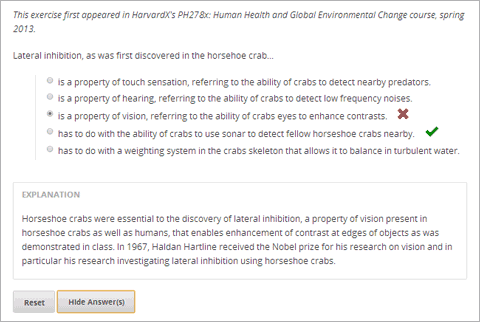
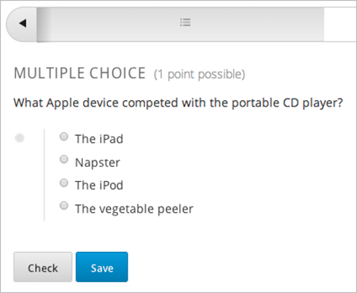
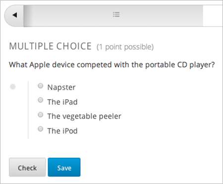

在多项选择问题中，学习者从一列选项中选择一个选项。不像 下拉 问题，其答案的选择直到学习者点击下拉箭头才显示出来，多项选择问题的选项一直是直接在问题的下部可见。
对于多项选择问题，在你的课程中，你可以有 edX Insight 来检查聚合的学习者的表现和测试提交的答案。更多信息请参照 Using edX Insights.
多项选择问题同样可以有多个高级选项，比如呈现选择的随机信息给学习者。更多关于这些选项的信息，请参照 多项选择高级选项.
你可以创建多项选择问在简单编辑器或高级编辑器中。你可以在简单编辑器中提出一个问题，然后切换到高级编辑器中用XML添加更多的配置选项。然而，你不能从高级编辑器切换回简单编辑器。所以在你切换到高级编辑器之前，你要尽可能完全地设计好问题。 .. _Use the Simple Editor to Create a Multiple Choice Problem:
利用 简单编辑器 创建一个检查框问题，请遵循以下步骤
>>question<<).
这个问题文本是问题的访问标签。[explanation] 会出现在解释文本的前面和后面上面展示了示例问题，接下来的文本显示在问题组件中。
>>Lateral inhibition, as was first discovered in the horsehoe crab:<<
( ) is a property of touch sensation, referring to the ability of crabs
to detect nearby predators.
( ) is a property of hearing, referring to the ability of crabs to detect
low frequency noises.
(x) is a property of vision, referring to the ability of crabs' eyes to
enhance contrasts.
( ) has to do with the ability of crabs to use sonar to detect fellow
horseshoe crabs nearby.
( ) has to do with a weighting system in the crab's skeleton that allows
it to balance in turbulent water.
[Explanation]
Horseshoe crabs were essential to the discovery of lateral inhibition,
a property of vision present in horseshoe crabs as well as in humans that
enables enhancement of contrast at edges of objects as was demonstrated in class.
In 1967, Haldan Hartline received the Nobel prize for his research on vision
and in particular his research investigating lateral inhibition using
horseshoe crabs.
[Explanation]
为了有 高级编辑器 来编辑一个多项选择问题，遵循下列步骤
<problem>
<fieldset>
<legend>Lateral inhibition, as was first discovered in the horseshoe crab...</legend>
<multiplechoiceresponse>
<choicegroup type="MultipleChoice" label="Lateral inhibition, as was first discovered
in the horseshoe crab">
<choice correct="false">is a property of touch sensation, referring to the ability
of crabs to detect nearby predators.</choice>
<choice correct="false">is a property of hearing, referring to the ability of crabs
to detect low frequency noises.</choice>
<choice correct="false">is a property of vision, referring to the ability of crabs'
eyes to enhance contrasts.</choice>
<choice correct="true">has to do with the ability of crabs to use sonar to detect
fellow horseshoe crabs nearby.</choice>
<choice correct="false">has to do with a weighting system in the crab's skeleton
that allows it to balance in turbulent water.</choice>
</choicegroup>
</multiplechoiceresponse>
</fieldset>
<solution>
<div class="detailed-solution">
<p>Explanation</p>
<p>Horseshoe crabs were essential to the discovery of lateral inhibition,
a property of vision present in horseshoe crabs as well as humans that
enables enhancement of contrast at edges of objects as was demonstrated in class.
In 1967, Haldan Hartline received the Nobel prize for his research on vision
and in particular his research investigating lateral inhibition using
horseshoe crabs.</p>
</div>
</solution>
</problem>
<problem>
<fieldset>
<legend>Question text</legend>
<multiplechoiceresponse>
<choicegroup type="MultipleChoice" label="label text">
<choice correct="false" name="a">Incorrect choice</choice>
<choice correct="true" name="b">Correct choice</choice>
</choicegroup>
</multiplechoiceresponse>
</fieldset>
<solution>
<div class="detailed-solution">
<p>Explanation or solution header</p>
<p>Explanation or solution text</p>
</div>
</solution>
</problem>
<multiplechoiceresponse> (必需): 表明问题是一个多项选择问题<choicegroup> (必需): 表明选择列表的开始<choice> (必需): 列出回答的选项标签: <multiplechoiceresponse>
表明问题是一个多项选择问题
属性
(空)
子标签
<choicegroup>- 所有的标准HTML标签 (可以用来规定文本的格式).
标签: <choicegroup>
表明选项列表的开始
属性
Attribute 描述 label (必需) 指定回答域的名称 type (必需) 必需设置为 “MultipleChoice”. 子标签
<choice>
标签: <choice>
列出一个回答选项
属性
Attribute 描述 correct (至少需要一项) 表明是一个正确或不正确的答案。当这个属性被设置为 “true” 时, 这个选项就是一个正确的回答。当设置为 “false” 时, 这个选项就是不正确的回答。你可以指定不止一个正确答案， 但是学习者只能选择一个选项然后提交 name 一个后端用来指涉选项的名称 子标签
(空)
多项选择问题有多个高级选项。你可以更改在问题中答案的顺序，包括当学习者选择一个特定的不正确的答案时出现的解释，或显现给每个学习者一个选项的随机集合。更多信息，请参照接下来的主题。
可选择地，你可以配置一个多项选择问题，以便打乱可能的答案的顺序
例如，问题的一次观察可以是这样的：
同一个问题的另一次观察，对于另一个学习者或同一个学习者的第二次观察，可以是这样的：
你也可以把一些回答打乱，而不打乱别的答案。例如，你可能想 “以上所有” 的答案总是出现在列表的最后但是把其他的答案打乱
你可以用简单编辑器或高级编辑器配置问题来打乱答案
你可以在 :ref:`简单编辑器`中配置问题来打乱答案.
例如，接下来宣言一个多项选择问题，还没有打乱功能。 (x) 表明正确答案
>>What Apple device competed with the portable CD player?<<
( ) The iPad
( ) Napster
(x) The iPod
( ) The vegetable peeler
添加打乱功能到问题中，则在第一个选项的圆括号中添加 !.
>>What Apple device competed with the portable CD player?<<
(!) The iPad
( ) Napster
(x) The iPod
( ) The vegetable peeler
为了在一个打乱的列表中固定答案的位置，在答案的圆括号中添加 @ .
>>What Apple device competed with the portable CD player?<<
(!) The iPad
( ) Napster
(x) The iPod
( ) The vegetable peeler
(@) All of the above
如果必要，你可以在圆括号中将它们结合使用。例如，为了在固定正确答案的位置，你可以同时作用 x 和``@``.
(x@) The iPod
你可以通过在:ref:高级编辑器 中编辑XML来配置问题以打乱答案。
例如，接下来定义了一个多项选择问题，还没有打乱功能。
<problem>
<fieldset>
<legend>What Apple device competed with the portable CD player?</legend>
<multiplechoiceresponse>
<choicegroup type="MultipleChoice">
<choice correct="false">The iPad</choice>
<choice correct="false">Napster</choice>
<choice correct="true">The iPod</choice>
<choice correct="false">The vegetable peeler</choice>
</choicegroup>
</multiplechoiceresponse>
</fieldset>
</problem>
为添加打乱到问题中，添加 shuffle="true" 到
<choicegroup> 元素中.
<problem>
<fieldset>
<legend>What Apple device competed with the portable CD player?</legend>
<multiplechoiceresponse>
<choicegroup type="MultipleChoice" shuffle="true">
<choice correct="false">The iPad</choice>
<choice correct="false">Napster</choice>
<choice correct="true">The iPod</choice>
<choice correct="false">The vegetable peeler</choice>
</choicegroup>
</multiplechoiceresponse>
</fieldset>
</problem>
为了在列表中固定答案的位置，添加 fixed="true" 到答案的
choice 元素中.
<problem>
<fieldset>
<legend>What Apple device competed with the portable CD player?</legend>
<multiplechoiceresponse>
<choicegroup type="MultipleChoice" shuffle="true">
<choice correct="false">The iPad</choice>
<choice correct="false">Napster</choice>
<choice correct="true">The iPod</choice>
<choice correct="false">The vegetable peeler</choice>
<choice correct="false" fixed="true">All of the above</choice>
</choicegroup>
</multiplechoiceresponse>
</fieldset>
</problem>
你可以配置一个多项选择问题以便对不正确答案的解释能自动显现给学习者。你可以用这些解释来引导学习者选择正确的答案。所以，定向反馈对于多项选择问题很有用，当其对学习者有多种用途时。.
你通过编辑在:ref:高级编辑器 中的XML来配置问题以提供定义反馈.
遵循以下的XML指南
targeted-feedback 属性到 <multiplechoiceresponse>
元素中，而值为空: <multiplechoiceresponse targeted-feedback="">.<targetedfeedbackset> 元素，于 <solution> 元素之前.<targetedfeedback> 元素.<targetedfeedback> 元素中，输入你的不正确答案的解释，用以下描述的HTML作标记.<targetedfeedback> 元素到一个特定的不正确答案，通过对使用同样的 explanation-id 属性值.<solution> 元素，用相同的
explanation-id 属性值作为正确的 <choice> 元素.例如，多项选择问题的XML如下.
<problem>
<fieldset>
<legend>What Apple device competed with the portable CD player?</legend>
<multiplechoiceresponse targeted-feedback="">
<choicegroup type="MultipleChoice">
<choice correct="false" explanation-id="feedback1">The iPad</choice>
<choice correct="false" explanation-id="feedback2">Napster</choice>
<choice correct="true" explanation-id="correct">The iPod</choice>
<choice correct="false" explanation-id="feedback3">The vegetable peeler</choice>
</choicegroup>
</fieldset>
</multiplechoiceresponse>
...
跟着的是如下定义定向反馈的XML
...
<targetedfeedbackset>
<targetedfeedback explanation-id="feedback1">
<div class="detailed-targeted-feedback">
<p>Targeted Feedback</p>
<p>The iPad came out later and did not directly compete with portable
CD players.</p>
</div>
</targetedfeedback>
<targetedfeedback explanation-id="feedback2">
<div class="detailed-targeted-feedback">
<p>Targeted Feedback</p>
<p>Napster was not an Apple product.</p>
</div>
</targetedfeedback>
<targetedfeedback explanation-id="feedback3">
<div class="detailed-targeted-feedback">
<p>Targeted Feedback</p>
<p>Vegetable peelers do not play music.</p>
</div>
</targetedfeedback>
</targetedfeedbackset>
<solution explanation-id="correct">
<div class="detailed-solution">
<p>The iPod directly competed with portable CD players.</p>
</div>
</solution>
</problem>
你可以配置一个多项选择问题以便展示给每个学习者的是选项的随机子集。例如，你可以添加10个可能的选项到问题，每个学习者看到其中的5个选项。
答案池必须有至少一个正确答案，也可以有不止一个正确答案。在每个给学习者的选项集中，包含一个正确答案。例如，你可以在选项集中配置两个正确答案，两个中的一个正确答案被包含在学习者能看到的选项集中。
你通过在:ref:高级编辑器 中编辑XML来配置问题以提供答案池.
遵循以下XML指南:
<choicegroup> 元素中，添加 answer-pool 属性，用数值指定在集合中可能的答案个数。例如 <choicegroup answer-pool="4">.<choice> 元素添加一个 explanation-
id 映射到解决方案的属性和值, <choice
correct="true" explanation-id="iPod">The iPod</choice>.<solution> 元素，添加一个 explanation-id 映射回一个正确答案的属性和值,例如 <solution
explanation-id="iPod">.Note
如果选项仅包含一个正确答案，你不必使用 explanation-id ，在 choice 或 <solution>
元素中。但你还是要使用 <solutionset> 元素来包裹`<solution>`` 元素.
例如，对于接下来的多项选择问题，一个学习者将看到四个选项。在每个集合中，选项中的一个会是两个正确答案中的一个。正确答案显示的解释是与之有相同explanation ID的那个解释.
<problem>
<fieldset>
<legend>What Apple devices let you carry your digital music library in your pocket?</legend>
<multiplechoiceresponse>
<choicegroup type="MultipleChoice" answer-pool="4">
<choice correct="false">The iPad</choice>
<choice correct="false">Napster</choice>
<choice correct="true" explanation-id="iPod">The iPod</choice>
<choice correct="false">The vegetable peeler</choice>
<choice correct="false">The iMac</choice>
<choice correct="true" explanation-id="iPhone">The iPhone</choice>
</choicegroup>
</multiplechoiceresponse>
</fieldset>
<solutionset>
<solution explanation-id="iPod">
<div class="detailed-solution">
<p>Explanation</p>
<p>Yes, the iPod is Apple's portable digital music player.</p>
</div>
</solution>
<solution explanation-id="iPhone">
<div class="detailed-solution">
<p>Explanation</p>
<p>In addition to being a cell phone, the iPhone can store and play your
digital music.</p>
</div>
</solution>
</solutionset>
</problem>